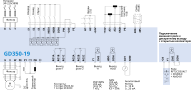

SIMATIC ET 200SP
Центральные процессоры
Краткая таблица помогает быстро сопоставить производительность, интерфейсы и артикулы.
Таблица выбора
| Модель | Интерфейсы | Применение | Артикул |
|---|---|---|---|
| CPU 1510SP-1 PN | PROFINET | Стандартные задачи автоматизации | 6ES7510-1DJ01-0AB0 |
| CPU 1512SP-1 PN | PROFINET | Более производительные станции | 6ES7512-1DK01-0AB0 |
| CPU 1515SP PC2 | PROFINET, Industrial Ethernet | Периферия и задачи на базе ПК | 6ES7677-2DB42-0GB0 |
Схема подключения
